¿Qué aprenderás en este capítulo?
Arquitectura de un Microprocesador
Un microprocesador de propósito general es un procesador que ejecuta instrucciones almacenadas en memoria. A diferencia de los circuitos dedicados, el programa determina la función del procesador. La CPU se compone de dos bloques fundamentales:
Unidad de Control (CU)
Genera las señales de control que dirigen la operación de la ruta de datos. Implementada como una máquina de estados finitos (FSM) que atraviesa los estados del ciclo de instrucción.
Ruta de Datos (Datapath)
Contiene los componentes funcionales: registros, ALU, multiplexores, contador de programa (PC), registro de instrucción (IR) y buses de interconexión.
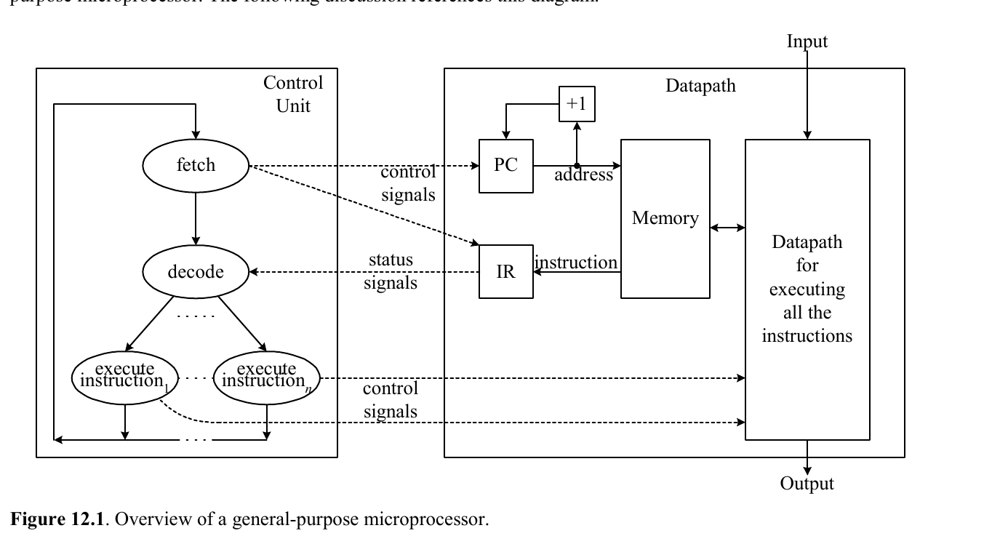
Microprocesadores EC-1 y EC-2
EC-1: Microprocesador de 5 instrucciones
El EC-1 es el primer microprocesador educativo. Utiliza instrucciones de 8 bits con un opcode de 3 bits y una dirección de 4 bits (bit 4 no utilizado). Usa una ROM de 16×8 como memoria de programa y un registro acumulador A de 8 bits.
Conjunto de Instrucciones (ISA)
| Instrucción | Opcode | Codificación | Operación |
|---|---|---|---|
IN A | 000 | 000x xxxx | Lee entrada y almacena en A |
OUT A | 001 | 001x xxxx | Envía contenido de A a la salida |
DEC A | 010 | 010x xxxx | Decrementa A en 1: A ← A − 1 |
JNZ dirección | 011 | 011x aaaa | Salta a dirección si A ≠ 0 |
HALT | 100 | 100x xxxx | Detiene la ejecución |
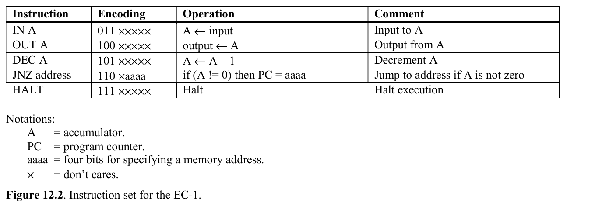
Señales de Control y Estado
Señales de Control (5)
- IRload Carga el registro de instrucción
- PCload Carga el contador de programa
- INmux Selecciona fuente del mux de entrada
- Aload Carga el acumulador A
- JNZmux Selecciona fuente para salto condicional
Señales de Estado (1)
- Aneq0 Vale 1 cuando A ≠ 0
Especificaciones
- Memoria ROM 16×8 bits
- PC Contador de 4 bits
- IR Registro de 8 bits
- A Acumulador de 8 bits
Diagrama de la Ruta de Datos del EC-1
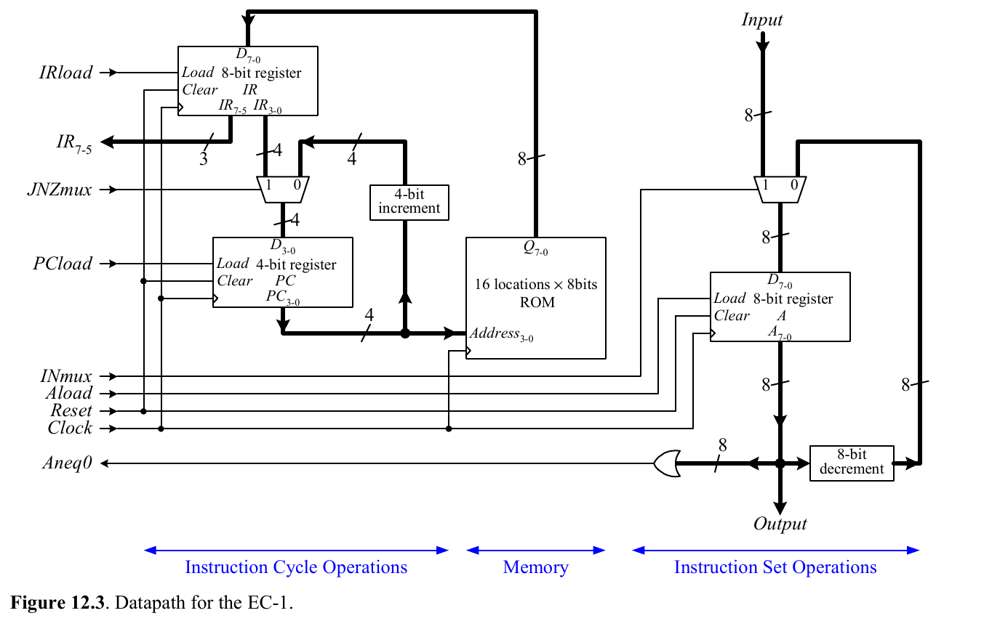
Diagrama de Estados de la Unidad de Control
La FSM del EC-1 tiene 8 estados. Comienza en el estado de reset, pasa a fetch, luego a decode, y según el opcode ejecuta la instrucción correspondiente.
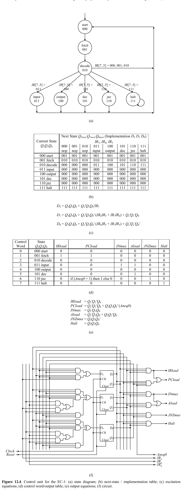
Tabla de Palabra de Control
| Estado | IRload | PCload | INmux | Aload | JNZmux |
|---|---|---|---|---|---|
| s0 (Start) | 0 | 0 | x | 0 | x |
| s1 (Fetch) | 1 | 0 | x | 0 | x |
| s2 (Decode) | 0 | 1 | x | 0 | 0 |
| s3 (IN A) | 0 | 0 | 0 | 1 | x |
| s4 (OUT A) | 0 | 0 | x | 0 | x |
| s5 (DEC A) | 0 | 0 | 1 | 1 | x |
| s6 (JNZ) | 0 | Aneq0 | x | 0 | 1 |
| s7 (HALT) | 0 | 0 | x | 0 | x |
Tabla de Próximo Estado e Implementación
La unidad de control se implementa con 3 flip-flops tipo D (Q₂Q₁Q₀) para codificar los 8 estados. La siguiente tabla muestra el estado actual, el próximo estado según las condiciones del opcode (IR₇, IR₆, IR₅), y los valores de entrada D₂, D₁, D₀ de los flip-flops.
| Estado Actual | Q₂Q₁Q₀ | Condición | Próximo Estado | D₂D₁D₀ |
|---|---|---|---|---|
| s0 (Start) | 000 | Siempre | s1 (Fetch) | 001 |
| s1 (Fetch) | 001 | Siempre | s2 (Decode) | 010 |
| s2 (Decode) | 010 | IR = 000 (IN) | s3 (IN A) | 011 |
| IR = 001 (OUT) | s4 (OUT A) | 100 | ||
| IR = 010 (DEC) | s5 (DEC A) | 101 | ||
| IR = 011 (JNZ) | s6 (JNZ) | 110 | ||
| IR = 100 (HALT) | s7 (HALT) | 111 | ||
| s3 (IN A) | 011 | Siempre | s1 (Fetch) | 001 |
| s4 (OUT A) | 100 | Siempre | s1 (Fetch) | 001 |
| s5 (DEC A) | 101 | Siempre | s1 (Fetch) | 001 |
| s6 (JNZ) | 110 | Siempre | s1 (Fetch) | 001 |
| s7 (HALT) | 111 | Siempre | s7 (HALT) | 111 |
Circuito Completo y Simulación
El circuito completo del EC-1 se obtiene conectando el módulo de la unidad de control (construido con 3 flip-flops D y la lógica combinacional de las ecuaciones de excitación y salida) con el módulo de la ruta de datos (PC, ROM, IR, MUXes, decrementador y acumulador A). Las señales de control fluyen de la CU al datapath y la señal de estado Aneq0 fluye de vuelta.
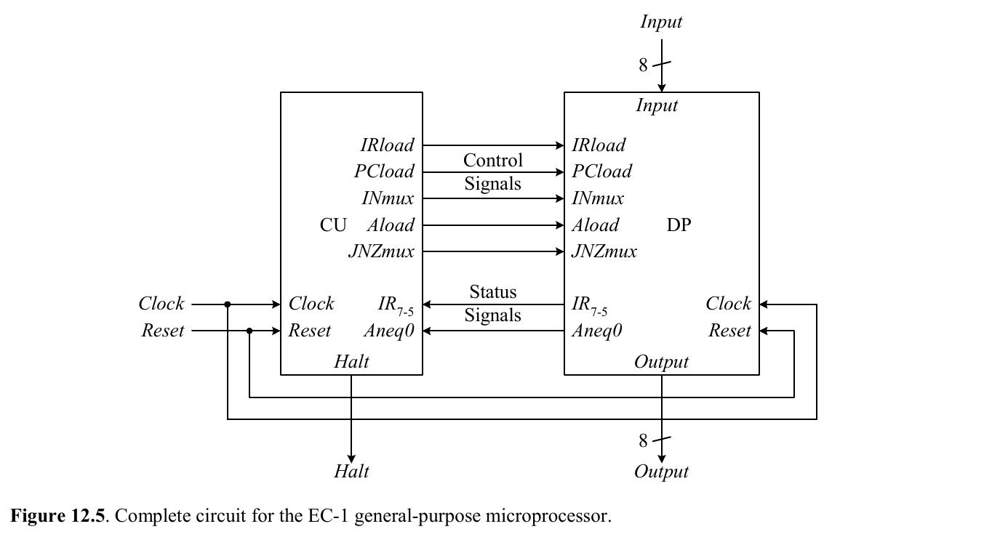
La simulación del programa de cuenta regresiva con entrada N=3 muestra la siguiente traza: el procesador lee 3, muestra 3, decrementa a 2, muestra 2, decrementa a 1, muestra 1, decrementa a 0, y finalmente ejecuta HALT al detectar A=0 en la instrucción JNZ.
Implementación en Hardware (Tarjeta UP2)
Entrada / Salida
- Entrada 8 interruptores DIP
- Salida 2 displays LED de 7 segmentos
- Reset Botón FLEX_PB1
Circuitos Auxiliares
- BCD Decoder Convierte binario a 2 dígitos BCD para LEDs
- Clock Div Divisor de reloj: 25.175 MHz → ~4 Hz
- MIF Archivo PROGRAM.MIF cargado en ROM
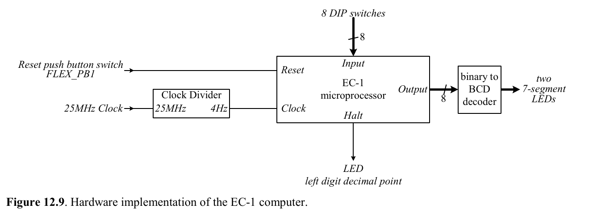
Programa de Ejemplo: Cuenta Regresiva
Este programa lee un número de la entrada, muestra su valor, lo decrementa y repite hasta llegar a cero.
-- Programa: Cuenta Regresiva -- Lee un número N y muestra N, N-1, N-2, ..., 1, 0 0: IN A -- Leer valor de entrada en A 1: OUT A -- Mostrar valor actual de A 2: DEC A -- Decrementar A: A ← A - 1 3: JNZ 1 -- Si A ≠ 0, saltar a dirección 1 4: HALT -- Fin del programa
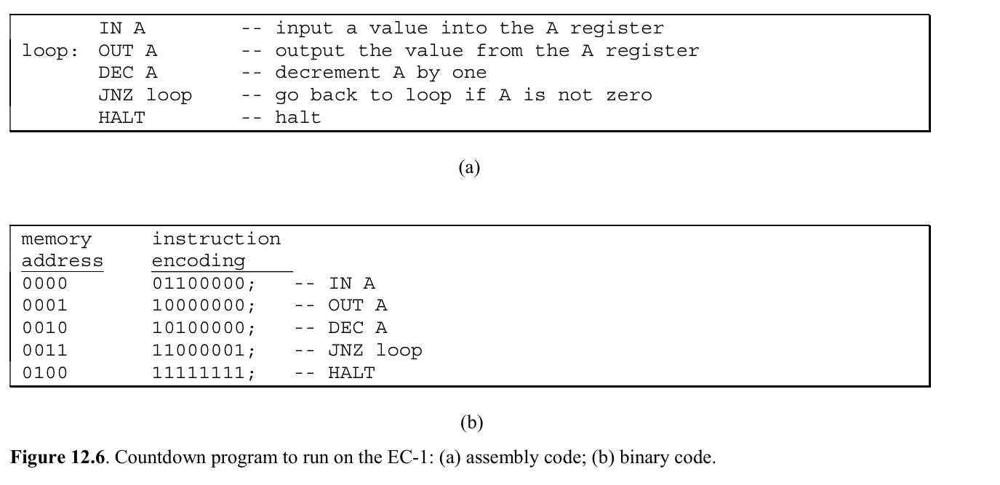
Archivo PROGRAM.MIF para el EC-1
-- Programa Cuenta Regresiva para EC-1 DEPTH = 16; WIDTH = 8; ADDRESS_RADIX = HEX; DATA_RADIX = BIN; CONTENT BEGIN 0 : 00000000; -- IN A 1 : 00100000; -- OUT A 2 : 01000000; -- DEC A 3 : 01100001; -- JNZ 1 4 : 10000000; -- HALT END;
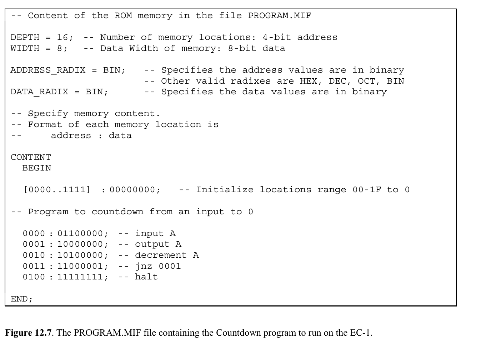
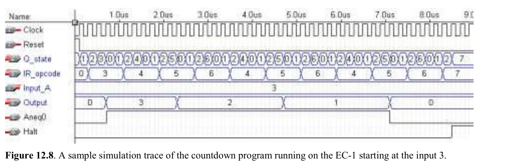
EC-2: Microprocesador de 8 instrucciones
El EC-2 amplía el EC-1 con operaciones de memoria (LOAD/STORE), aritmética (ADD/SUB) y saltos condicionales mejorados (JZ/JPOS). Usa RAM de 32×8 bits (lectura y escritura), un PC de 5 bits y un acumulador A de 8 bits con resta por complemento a dos.
Conjunto de Instrucciones (ISA)
| Instrucción | Opcode | Codificación | Operación |
|---|---|---|---|
LOAD dirección | 000 | 000a aaaa | A ← Memoria[dirección] |
STORE dirección | 001 | 001a aaaa | Memoria[dirección] ← A |
ADD dirección | 010 | 010a aaaa | A ← A + Memoria[dirección] |
SUB dirección | 011 | 011a aaaa | A ← A − Memoria[dirección] |
IN A | 100 | 100x xxxx | A ← Entrada |
JZ dirección | 101 | 101a aaaa | Si A = 0, PC ← dirección |
JPOS dirección | 110 | 110a aaaa | Si A > 0, PC ← dirección |
HALT | 111 | 111x xxxx | Detiene la ejecución |
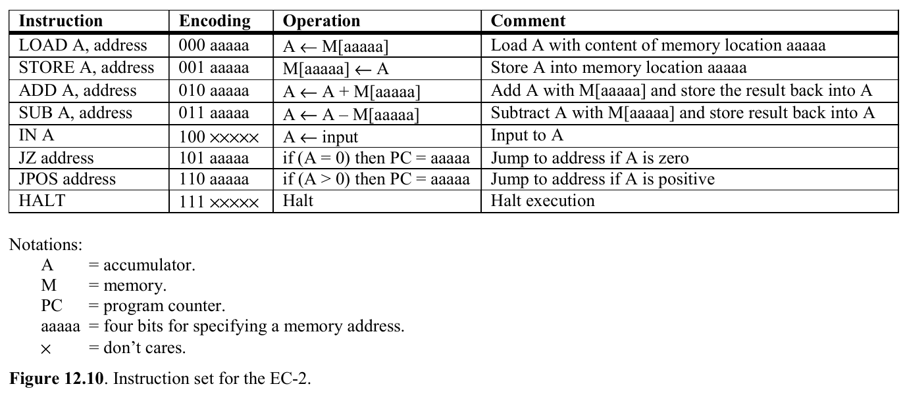
Señales de Control y Estado
Señales de Control (8)
- IRload Carga registro de instrucción
- JMPmux Selecciona fuente de salto
- PCload Carga el PC
- Meminst Inst. de memoria activa
- MemWr Escritura en memoria
- Asel[1:0] Selección fuente de A (2 bits)
- Aload Carga el acumulador
- Sub Selecciona resta en la ALU
Señales de Estado (2)
- Aeq0 Vale 1 cuando A = 0
- Apos Vale 1 cuando A > 0 (bit 7 = 0, A ≠ 0)
Especificaciones
- Memoria RAM 32×8 bits
- PC Contador de 5 bits
- IR Registro de 8 bits
- A Acumulador de 8 bits
Diagrama de la Ruta de Datos del EC-2
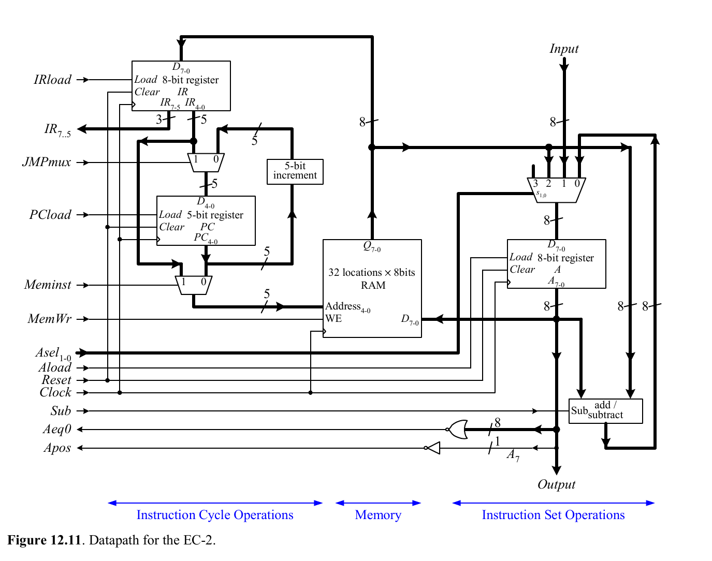
Tabla de Palabra de Control del EC-2
| Estado | IRload | JMPmux | PCload | Meminst | MemWr | Asel | Aload | Sub |
|---|---|---|---|---|---|---|---|---|
| s0 (Start) | 0 | x | 0 | 0 | 0 | xx | 0 | x |
| s1 (Fetch) | 1 | x | 0 | 0 | 0 | xx | 0 | x |
| s2 (Decode) | 0 | 0 | 1 | 0 | 0 | xx | 0 | x |
| s3 (LOAD) | 0 | x | 0 | 1 | 0 | 00 | 1 | x |
| s4 (STORE) | 0 | x | 0 | 1 | 1 | xx | 0 | x |
| s5 (ADD) | 0 | x | 0 | 1 | 0 | 01 | 1 | 0 |
| s6 (SUB) | 0 | x | 0 | 1 | 0 | 01 | 1 | 1 |
| s7 (IN A) | 0 | x | 0 | 0 | 0 | 10 | 1 | x |
| s8 (JZ) | 0 | 1 | Aeq0 | 0 | 0 | xx | 0 | x |
| s9 (JPOS) | 0 | 1 | Apos | 0 | 0 | xx | 0 | x |
| s10 (HALT) | 0 | x | 0 | 0 | 0 | xx | 0 | x |
Tabla de Próximo Estado e Implementación
La unidad de control del EC-2 requiere 4 flip-flops D (Q₃Q₂Q₁Q₀) para codificar sus 11 estados (s0–s10). La tabla muestra las transiciones y la codificación de los flip-flops.
| Estado Actual | Q₃Q₂Q₁Q₀ | Condición | Próximo Estado | D₃D₂D₁D₀ |
|---|---|---|---|---|
| s0 (Start) | 0000 | Siempre | s1 (Fetch) | 0001 |
| s1 (Fetch) | 0001 | Siempre | s2 (Decode) | 0010 |
| s2 (Decode) | 0010 | IR = 000 (LOAD) | s3 (LOAD) | 1000 |
| IR = 001 (STORE) | s4 (STORE) | 1001 | ||
| IR = 010 (ADD) | s5 (ADD) | 1010 | ||
| IR = 011 (SUB) | s6 (SUB) | 1011 | ||
| IR = 100 (IN A) | s7 (IN A) | 1100 | ||
| IR = 101 (JZ) | s8 (JZ) | 1101 | ||
| IR = 110 (JPOS) | s9 (JPOS) | 1110 | ||
| IR = 111 (HALT) | s10 (HALT) | 1111 | ||
| s3 (LOAD) | 1000 | Siempre | s0 (Start) | 0000 |
| s4 (STORE) | 1001 | Siempre | s0 (Start) | 0000 |
| s5 (ADD) | 1010 | Siempre | s0 (Start) | 0000 |
| s6 (SUB) | 1011 | Siempre | s0 (Start) | 0000 |
| s7 (IN A) | 1100 | Enter = 1 | s0 (Start) | 0000 |
| Enter = 0 | s7 (IN A) | 1100 | ||
| s8 (JZ) | 1101 | Siempre | s0 (Start) | 0000 |
| s9 (JPOS) | 1110 | Siempre | s0 (Start) | 0000 |
| s10 (HALT) | 1111 | Siempre | s10 (HALT) | 1111 |
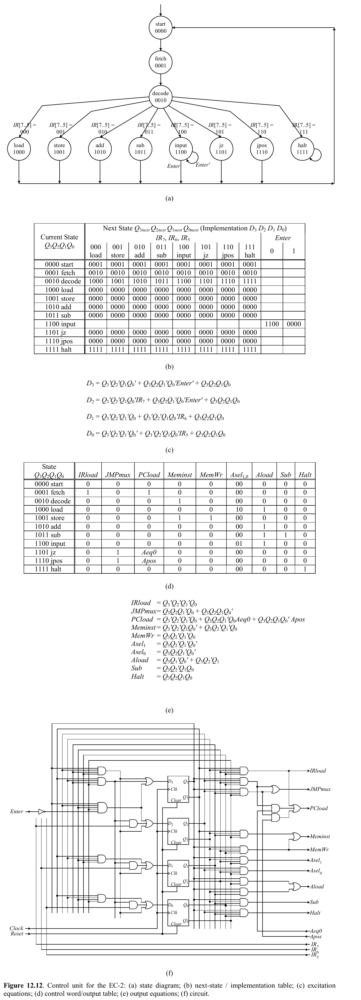
Implementación en Hardware (Tarjeta UP2)
Enter para confirmar la entrada, implementada con un circuito One-Shot.
Entrada / Salida
- Entrada 8 interruptores DIP
- Salida 2 displays LED de 7 segmentos
- Reset Botón FLEX_PB1
- Enter Botón FLEX_PB2 (con One-Shot)
Circuitos Auxiliares
- One-Shot Genera pulso único al presionar Enter
- BCD Decoder Convierte binario a BCD
- Clock Div 25.175 MHz → ~4 Hz
- MIF PROGRAM.MIF cargado en RAM
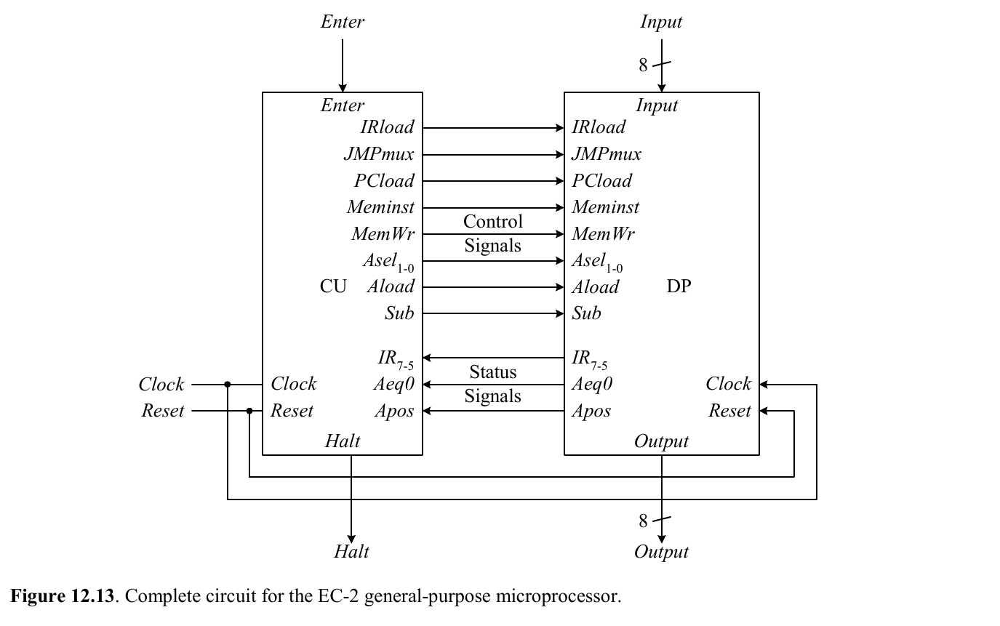
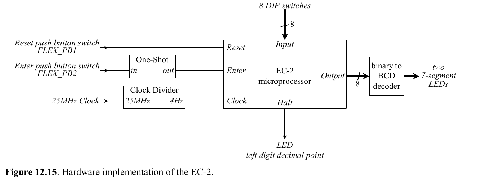
Programa de Ejemplo: Máximo Común Divisor (GCD)
Implementación del algoritmo de Euclides para calcular el MCD de dos números usando restas sucesivas.
-- Programa: Máximo Común Divisor (Algoritmo de Euclides) -- Variables: x en dir 11110 (30), y en dir 11111 (31) 0: IN A -- Leer primer número (x) 1: STORE 30 -- Guardar como x 2: IN A -- Leer segundo número (y) 3: STORE 31 -- Guardar como y -- loop: 4: LOAD 30 -- A ← x 5: SUB 31 -- A ← x - y 6: JZ 16 -- Si x = y → salir (GCD encontrado) 7: JPOS 12 -- Si x > y → ir a x_mayor -- y_mayor: y ← y - x 8: LOAD 31 -- A ← y 9: SUB 30 -- A ← y - x 10: STORE 31 -- y ← resultado 11: JPOS 4 -- Volver al loop (siempre positivo) -- x_mayor: x ← x - y 12: LOAD 30 -- A ← x 13: SUB 31 -- A ← x - y 14: STORE 30 -- x ← resultado 15: JPOS 4 -- Volver al loop -- salir: 16: LOAD 30 -- A ← x (= GCD) 17: HALT -- Fin — resultado en OUTPUT
Archivo PROGRAM.MIF para el EC-2 (GCD)
-- Programa GCD (Máximo Común Divisor) para EC-2 DEPTH = 32; WIDTH = 8; ADDRESS_RADIX = BIN; DATA_RADIX = BIN; CONTENT BEGIN 00000 : 10000000; -- 0: IN A 00001 : 00111110; -- 1: STORE 30 00010 : 10000000; -- 2: IN A 00011 : 00111111; -- 3: STORE 31 00100 : 00011110; -- 4: LOAD 30 00101 : 01111111; -- 5: SUB 31 00110 : 10110000; -- 6: JZ 16 00111 : 11001100; -- 7: JPOS 12 01000 : 00011111; -- 8: LOAD 31 01001 : 01111110; -- 9: SUB 30 01010 : 00111111; -- 10: STORE 31 01011 : 11000100; -- 11: JPOS 4 01100 : 00011110; -- 12: LOAD 30 01101 : 01111111; -- 13: SUB 31 01110 : 00111110; -- 14: STORE 30 01111 : 11000100; -- 15: JPOS 4 10000 : 00011110; -- 16: LOAD 30 (salir) 10001 : 11100000; -- 17: HALT END;
Código VHDL del Microprocesador
Se presentan dos enfoques fundamentales de diseño en VHDL para implementar microprocesadores:
A continuación se presentan cinco módulos VHDL completos: el EC-1 conductual, el EC-2 conductual, la unidad de control del EC-2 (FSM), la ruta de datos del EC-2 (datapath), y el microprocesador EC-2 completo en su versión estructural.
EC-1 — Modelo Conductual (FSMD)
En este modelo, un solo proceso VHDL describe la máquina de estados completa del EC-1, incluyendo las operaciones de la ruta de datos directamente en los estados de la FSM. El proceso es sensible a clock y reset, e implementa el ciclo completo Fetch → Decode → Execute.
La memoria ROM de programa se modela como un arreglo constante de 16 posiciones de 8 bits. El Contador de Programa (PC) de 4 bits permite direccionar las 16 posiciones. El Registro de Instrucción (IR) almacena la instrucción leída de ROM, y el campo IR(7 downto 5) se usa como opcode de 3 bits para decodificación.
LIBRARY ieee; USE ieee.std_logic_1164.ALL; USE ieee.std_logic_unsigned.ALL; ENTITY ec1 IS PORT( clock : IN STD_LOGIC; reset : IN STD_LOGIC; input : IN STD_LOGIC_VECTOR(7 DOWNTO 0); output : OUT STD_LOGIC_VECTOR(7 DOWNTO 0) ); END ec1; ARCHITECTURE fsmd OF ec1 IS -- Tipo enumerado para los 8 estados de la FSM del EC-1 -- s_start: estado inicial (reset), s_fetch/s_decode: ciclo de instrucción -- s_in/s_out/s_dec/s_jnz: ejecución de cada instrucción, s_halt: fin TYPE state_type IS ( s_start, s_fetch, s_decode, s_in, s_out, s_dec, s_jnz, s_halt ); SIGNAL state : state_type; -- Registros internos SIGNAL PC : STD_LOGIC_VECTOR(3 DOWNTO 0); -- Contador de programa SIGNAL IR : STD_LOGIC_VECTOR(7 DOWNTO 0); -- Registro de instrucción SIGNAL A : STD_LOGIC_VECTOR(7 DOWNTO 0); -- Acumulador -- ROM: memoria de programa 16×8 (constante, no modificable) -- Contiene el programa de countdown: IN, OUT, DEC, JNZ 1, HALT TYPE rom_type IS ARRAY(0 TO 15) OF STD_LOGIC_VECTOR(7 DOWNTO 0); CONSTANT ROM : rom_type := ( "00000000", -- 0: IN A "00100000", -- 1: OUT A "01000000", -- 2: DEC A "01100001", -- 3: JNZ 1 "10000000", -- 4: HALT OTHERS => "00000000" ); BEGIN PROCESS(clock, reset) BEGIN IF reset = '1' THEN state <= s_start; PC <= (OTHERS => '0'); IR <= (OTHERS => '0'); A <= (OTHERS => '0'); output <= (OTHERS => '0'); ELSIF clock'EVENT AND clock = '1' THEN CASE state IS WHEN s_start => state <= s_fetch; WHEN s_fetch => IR <= ROM(CONV_INTEGER(PC)); -- Leer instrucción state <= s_decode; WHEN s_decode => PC <= PC + 1; -- Incrementar PC CASE IR(7 DOWNTO 5) IS -- Decodificar opcode WHEN "000" => state <= s_in; WHEN "001" => state <= s_out; WHEN "010" => state <= s_dec; WHEN "011" => state <= s_jnz; WHEN "100" => state <= s_halt; WHEN OTHERS => state <= s_halt; END CASE; WHEN s_in => A <= input; -- A ← entrada state <= s_fetch; WHEN s_out => output <= A; -- Salida ← A state <= s_fetch; WHEN s_dec => A <= A - 1; -- Decrementar A state <= s_fetch; WHEN s_jnz => IF A /= "00000000" THEN -- Si A ≠ 0 PC <= IR(3 DOWNTO 0); -- Saltar a dirección END IF; state <= s_fetch; WHEN s_halt => state <= s_halt; -- Permanece detenido END CASE; END IF; END PROCESS; END fsmd;
EC-2 — Modelo Conductual (FSMD)
El EC-2 extiende significativamente al EC-1: utiliza RAM de 32×8 en lugar de ROM (permitiendo instrucciones STORE), un PC de 5 bits, y un conjunto de 8 instrucciones que incluye operaciones aritméticas (ADD, SUB) y saltos condicionales (JZ, JPOS). El modelo conductual encapsula toda esta funcionalidad en un solo proceso secuencial.
La señal de entrada input permite al usuario ingresar datos a través de los DIP switches, y output muestra el contenido del acumulador A en los LEDs de 7 segmentos. Las instrucciones de salto evalúan el contenido de A: JZ salta si A = 0, y JPOS salta si A es positivo (bit 7 = 0 y A ≠ 0, interpretación con signo).
LIBRARY ieee; USE ieee.std_logic_1164.ALL; USE ieee.std_logic_unsigned.ALL; ENTITY ec2 IS PORT( clock : IN STD_LOGIC; reset : IN STD_LOGIC; input : IN STD_LOGIC_VECTOR(7 DOWNTO 0); output : OUT STD_LOGIC_VECTOR(7 DOWNTO 0) ); END ec2; ARCHITECTURE fsmd OF ec2 IS -- 11 estados: inicio, fetch/decode, y uno por cada instrucción TYPE state_type IS ( s_start, s_fetch, s_decode, s_load, s_store, s_add, s_sub, s_in, s_jz, s_jpos, s_halt ); SIGNAL state : state_type; -- Registros internos del procesador SIGNAL PC : STD_LOGIC_VECTOR(4 DOWNTO 0); -- Contador de programa (5 bits → 32 dir.) SIGNAL IR : STD_LOGIC_VECTOR(7 DOWNTO 0); -- Registro de instrucción (opcode + operando) SIGNAL A : STD_LOGIC_VECTOR(7 DOWNTO 0); -- Acumulador (único registro de datos) -- RAM: memoria unificada de programa y datos (32×8 bits) -- En el modelo conductual, se modela como un arreglo de señales TYPE ram_type IS ARRAY(0 TO 31) OF STD_LOGIC_VECTOR(7 DOWNTO 0); SIGNAL RAM : ram_type; BEGIN PROCESS(clock, reset) BEGIN IF reset = '1' THEN state <= s_start; PC <= (OTHERS => '0'); IR <= (OTHERS => '0'); A <= (OTHERS => '0'); output <= (OTHERS => '0'); ELSIF clock'EVENT AND clock = '1' THEN CASE state IS WHEN s_start => state <= s_fetch; WHEN s_fetch => -- FETCH: leer instrucción de RAM IR <= RAM(CONV_INTEGER(PC)); -- IR ← RAM[PC] state <= s_decode; WHEN s_decode => -- DECODE: decodificar y avanzar PC PC <= PC + 1; -- PC ← PC + 1 (siguiente instrucción) CASE IR(7 DOWNTO 5) IS -- Decodificar opcode (3 bits superiores) WHEN "000" => state <= s_load; WHEN "001" => state <= s_store; WHEN "010" => state <= s_add; WHEN "011" => state <= s_sub; WHEN "100" => state <= s_in; WHEN "101" => state <= s_jz; WHEN "110" => state <= s_jpos; WHEN OTHERS => state <= s_halt; END CASE; WHEN s_load => -- A ← M[dir] A <= RAM(CONV_INTEGER(IR(4 DOWNTO 0))); state <= s_fetch; WHEN s_store => -- M[dir] ← A RAM(CONV_INTEGER(IR(4 DOWNTO 0))) <= A; state <= s_fetch; WHEN s_add => -- A ← A + M[dir] A <= A + RAM(CONV_INTEGER(IR(4 DOWNTO 0))); state <= s_fetch; WHEN s_sub => -- A ← A - M[dir] A <= A - RAM(CONV_INTEGER(IR(4 DOWNTO 0))); state <= s_fetch; WHEN s_in => -- A ← entrada A <= input; state <= s_fetch; WHEN s_jz => -- Saltar si A = 0 IF A = "00000000" THEN PC <= IR(4 DOWNTO 0); END IF; state <= s_fetch; WHEN s_jpos => -- Saltar si A > 0 IF A(7) = '0' AND A /= "00000000" THEN PC <= IR(4 DOWNTO 0); END IF; state <= s_fetch; WHEN s_halt => state <= s_halt; -- Permanecer detenido END CASE; END IF; END PROCESS; END fsmd;
EC-2 — Unidad de Control Estructural (FSM)
En el modelo estructural, la unidad de control se implementa como una entidad VHDL separada (cu) que contiene únicamente la lógica de control, sin registros de datos. Recibe como entradas el opcode (IR(7 downto 5)), las señales de estado del acumulador (Aeq0, Apos) y la señal enter del botón. Genera como salidas las 8 señales de control que gobiernan la ruta de datos.
La arquitectura usa dos procesos: uno secuencial para el registro de estado (sensible al reloj y reset), y uno combinacional para la lógica de próximo estado. Las salidas de control se generan con asignaciones concurrentes condicionales (WHEN/ELSE), que el sintetizador traduce directamente a lógica combinacional.
LIBRARY ieee; USE ieee.std_logic_1164.ALL; ENTITY cu IS PORT( clock, reset, enter : IN STD_LOGIC; IR : IN STD_LOGIC_VECTOR(7 DOWNTO 5); Aeq0, Apos : IN STD_LOGIC; IRload, JMPmux, PCload : OUT STD_LOGIC; Meminst, MemWr : OUT STD_LOGIC; Asel : OUT STD_LOGIC_VECTOR(1 DOWNTO 0); Aload, Sub : OUT STD_LOGIC; Halt : OUT STD_LOGIC ); END cu; ARCHITECTURE FSM OF cu IS TYPE state_type IS ( s_start, s_fetch, s_decode, s_load, s_store, s_add, s_sub, s_input, s_jz, s_jpos, s_halt ); SIGNAL state, nextstate : state_type; BEGIN -- Registro de estado PROCESS(clock, reset) BEGIN IF reset = '1' THEN state <= s_start; ELSIF clock'EVENT AND clock = '1' THEN state <= nextstate; END IF; END PROCESS; -- Lógica de próximo estado PROCESS(state, IR, enter) BEGIN CASE state IS WHEN s_start => nextstate <= s_fetch; WHEN s_fetch => nextstate <= s_decode; WHEN s_decode => CASE IR IS WHEN "000" => nextstate <= s_load; WHEN "001" => nextstate <= s_store; WHEN "010" => nextstate <= s_add; WHEN "011" => nextstate <= s_sub; WHEN "100" => nextstate <= s_input; WHEN "101" => nextstate <= s_jz; WHEN "110" => nextstate <= s_jpos; WHEN OTHERS => nextstate <= s_halt; END CASE; WHEN s_load => nextstate <= s_start; WHEN s_store => nextstate <= s_start; WHEN s_add => nextstate <= s_start; WHEN s_sub => nextstate <= s_start; WHEN s_input => IF enter = '1' THEN nextstate <= s_start; ELSE nextstate <= s_input; -- Esperar Enter END IF; WHEN s_jz => nextstate <= s_start; WHEN s_jpos => nextstate <= s_start; WHEN s_halt => nextstate <= s_halt; END CASE; END PROCESS; -- Lógica de salida (asignaciones concurrentes condicionales) -- Cada señal se activa solo en los estados que la requieren IRload <= '1' WHEN state = s_fetch ELSE '0'; JMPmux <= '1' WHEN state = s_jz OR state = s_jpos ELSE '0'; PCload <= '1' WHEN state = s_fetch OR (state = s_jz AND Aeq0 = '1') OR (state = s_jpos AND Apos = '1') ELSE '0'; Meminst <= '1' WHEN state = s_decode OR state = s_load OR state = s_store OR state = s_add OR state = s_sub ELSE '0'; MemWr <= '1' WHEN state = s_store ELSE '0'; Asel <= "00" WHEN state = s_load ELSE "01" WHEN state = s_add OR state = s_sub ELSE "10" WHEN state = s_input ELSE "00"; Aload <= '1' WHEN state = s_load OR state = s_add OR state = s_sub OR state = s_input ELSE '0'; Sub <= '1' WHEN state = s_sub ELSE '0'; Halt <= '1' WHEN state = s_halt ELSE '0'; END FSM;
EC-2 — Ruta de Datos Estructural (Datapath)
La ruta de datos (dp) es el componente que realiza todas las operaciones sobre los datos: almacenamiento en registros, acceso a memoria, operaciones aritméticas y selección de fuentes. Recibe las 8 señales de control de la unidad de control y devuelve el opcode (IR(7:5)) y las señales de estado (Aeq0, Apos).
La arquitectura estructural instancia los siguientes componentes hardware, correspondientes a la Figura 12.11:
- IR (Registro de Instrucción): Registro de 8 bits — carga la instrucción de memoria cuando
IRload = 1 - JMPmux (MUX 2:1 de 5 bits): Selecciona entre PC+1 (incremento normal) o IR(4:0) (dirección de salto)
- PC (Contador de Programa): Registro de 5 bits — carga nueva dirección cuando
PCload = 1 - Incrementador: Suma 1 al PC actual para avanzar a la siguiente instrucción
- Meminst MUX: Selecciona la fuente de dirección de memoria: PC (fetch) o IR(4:0) (acceso a datos)
- RAM 32×8: Memoria unificada de programa y datos, inicializada desde PROGRAM.MIF
- MUX 4:1 (Asel): Selecciona la entrada del acumulador: RAM directa, resultado del sumador/restador, entrada del usuario, o no usado
- Acumulador A: Registro de 8 bits — almacena resultado cuando
Aload = 1 - Sumador/Restador: Opera A ± RAM[dir];
Sub = 1selecciona resta
-- ========================================================== -- EC-2 Datapath — Ruta de Datos Estructural -- Figura 12.16 del libro de texto -- Instancia todos los componentes del datapath y los -- interconecta mediante señales internas. -- Componentes: IR, PC, Incrementador, JMPmux, Meminst MUX, -- RAM (lpm_ram_dq), MUX 4:1, Acumulador A, Sumador/Restador -- ========================================================== LIBRARY IEEE; USE IEEE.std_logic_1164.ALL; LIBRARY lpm; -- Librería LPM de Altera para componentes parametrizados USE lpm.lpm_components.ALL; ENTITY dp IS PORT( Clock, Clear : IN STD_LOGIC; -- Reloj del sistema y reset asíncrono -- Entrada de datos del usuario (8 DIP switches) Input : IN STD_LOGIC_VECTOR(7 DOWNTO 0); -- Señales de control provenientes de la Unidad de Control (CU) IRload, JMPmux, PCload : IN STD_LOGIC; -- Carga IR, sel. MUX salto, carga PC Meminst, MemWr : IN STD_LOGIC; -- Sel. dir. memoria, habilitación escritura Asel : IN STD_LOGIC_VECTOR(1 DOWNTO 0); -- Selección MUX 4:1 del acumulador Aload, Sub : IN STD_LOGIC; -- Carga acumulador, selección resta -- Señales de estado hacia la Unidad de Control (CU) IR : OUT STD_LOGIC_VECTOR(7 DOWNTO 5); -- Opcode (3 bits superiores de IR) Aeq0, Apos : OUT STD_LOGIC; -- Banderas: A=0 y A>0 -- Salida de datos (hacia display 7-segmentos) Output : OUT STD_LOGIC_VECTOR(7 DOWNTO 0) ); END dp; ARCHITECTURE Structural OF dp IS -- ======================================== -- Declaración de componentes reutilizables -- ======================================== -- Registro genérico de N bits (IR, PC, Acumulador) COMPONENT reg GENERIC(size : INTEGER := 4); -- Tamaño real definido en GENERIC MAP PORT( Clock, Clear, Load : IN STD_LOGIC; D : IN STD_LOGIC_VECTOR(size-1 DOWNTO 0); -- Entrada de datos Q : OUT STD_LOGIC_VECTOR(size-1 DOWNTO 0) -- Salida de datos ); END COMPONENT; -- Incrementador genérico de N bits (PC + 1) COMPONENT increment GENERIC(size : INTEGER := 8); PORT( A : IN STD_LOGIC_VECTOR(size-1 DOWNTO 0); -- Valor a incrementar F : OUT STD_LOGIC_VECTOR(size-1 DOWNTO 0) -- Resultado = A + 1 ); END COMPONENT; -- Multiplexor 2:1 genérico (JMPmux, Meminst MUX) COMPONENT mux2 GENERIC(size : INTEGER := 8); PORT( S : IN STD_LOGIC; -- Línea de selección D1, D0 : IN STD_LOGIC_VECTOR(size-1 DOWNTO 0); -- Entradas de datos Y : OUT STD_LOGIC_VECTOR(size-1 DOWNTO 0) -- Salida: D1 si S=1, D0 si S=0 ); END COMPONENT; -- Multiplexor 4:1 genérico (selección entrada del acumulador) COMPONENT mux4 GENERIC(size : INTEGER := 8); PORT( S : IN STD_LOGIC_VECTOR(1 DOWNTO 0); -- Selección (2 bits) D3, D2, D1, D0 : IN STD_LOGIC_VECTOR(size-1 DOWNTO 0); Y : OUT STD_LOGIC_VECTOR(size-1 DOWNTO 0) ); -- Asel: "00"→RAM, "01"→AddSub, "10"→Input, "11"→no usado END COMPONENT; -- Sumador/Restador genérico de N bits COMPONENT addsub GENERIC(n : INTEGER := 4); PORT( S : IN std_logic; -- 0=Suma, 1=Resta A, B : IN std_logic_vector(n-1 DOWNTO 0); F : OUT std_logic_vector(n-1 DOWNTO 0); -- Resultado unsigned_overflow : OUT std_logic; -- Desbordamiento sin signo signed_overflow : OUT std_logic -- Desbordamiento con signo ); END COMPONENT; -- ========================================== -- Señales internas de interconexión -- ========================================== SIGNAL dp_IR, dp_RAMQ : STD_LOGIC_VECTOR(7 DOWNTO 0); -- Salida IR, salida RAM SIGNAL dp_JMPmux, dp_PC : STD_LOGIC_VECTOR(4 DOWNTO 0); -- Salida MUX salto, salida PC SIGNAL dp_increment : STD_LOGIC_VECTOR(4 DOWNTO 0); -- PC + 1 SIGNAL dp_meminst : STD_LOGIC_VECTOR(4 DOWNTO 0); -- Dirección de memoria SIGNAL dp_Amux, dp_addsub : STD_LOGIC_VECTOR(7 DOWNTO 0); -- Entrada MUX A, resultado ALU SIGNAL dp_A : STD_LOGIC_VECTOR(7 DOWNTO 0); -- Salida del acumulador A BEGIN -- ========================================== -- Instanciación estructural de componentes -- ========================================== -- U0: Registro de Instrucción (IR) — 8 bits -- Carga la instrucción leída de memoria cuando IRload='1' U0: reg GENERIC MAP(8) PORT MAP( Clock, Clear, IRLoad, dp_RAMQ, dp_IR); IR <= dp_IR(7 DOWNTO 5); -- Enviar opcode a la CU -- U1: JMPmux — MUX 2:1 de 5 bits -- S=0: siguiente instrucción (PC+1) -- S=1: dirección de salto desde IR(4:0) U1: mux2 GENERIC MAP(5) PORT MAP( JMPmux, dp_IR(4 DOWNTO 0), dp_increment, dp_JMPmux); -- U2: Contador de Programa (PC) — 5 bits -- Se carga con la salida del JMPmux cuando PCload='1' U2: reg GENERIC MAP(5) PORT MAP( Clock, Clear, PCLoad, dp_JMPmux, dp_PC); -- U3: Meminst MUX — MUX 2:1 de 5 bits -- S=0: dirección del PC (fetch de instrucción) -- S=1: dirección del operando desde IR(4:0) U3: mux2 GENERIC MAP(5) PORT MAP( Meminst, dp_IR(4 DOWNTO 0), dp_PC, dp_meminst); -- U4: Incrementador — PC + 1 -- Calcula la siguiente dirección secuencial U4: increment GENERIC MAP(5) PORT MAP( dp_PC, dp_increment); -- U5: RAM 32×8 — Memoria unificada (programa + datos) -- Inicializada con PROGRAM.MIF al configurar la FPGA -- Lectura: datos salen por dp_RAMQ -- Escritura: cuando MemWr='1', escribe dp_A en la dirección U5: lpm_ram_dq GENERIC MAP( lpm_widthad => 5, -- 5 bits de dirección → 32 posiciones lpm_outdata => "UNREGISTERED", -- Salida combinacional (sin registro) lpm_indata => "UNREGISTERED", lpm_address_control => "UNREGISTERED", lpm_file => "program.mif", -- Archivo de inicialización de memoria lpm_width => 8 -- 8 bits de ancho de palabra ) PORT MAP( data => dp_A, -- Datos de escritura (del acumulador) address => dp_meminst, -- Dirección (del MUX Meminst) we => MemWr, -- Write Enable inclock => Clock, -- Reloj para escritura síncrona q => dp_RAMQ -- Datos leídos de memoria ); -- U6: MUX 4:1 — Selección de entrada al acumulador -- Asel="00": dato de RAM (LOAD), "01": resultado ALU (ADD/SUB) -- Asel="10": entrada del usuario (IN), "11": no usado U6: mux4 GENERIC MAP(8) PORT MAP( Asel, dp_RAMQ, dp_RAMQ, Input, dp_addsub, dp_Amux); -- U7: Acumulador A — Registro de 8 bits -- Almacena el resultado de la operación cuando Aload='1' U7: reg GENERIC MAP(8) PORT MAP( Clock, Clear, ALoad, dp_Amux, dp_A); -- U8: Sumador/Restador de 8 bits -- Sub='0': F = A + RAM[dir] (suma) -- Sub='1': F = A - RAM[dir] (resta) U8: addsub GENERIC MAP(8) PORT MAP( Sub, dp_A, dp_RAMQ, dp_addsub, open, open); -- ========================================== -- Señales de estado para la Unidad de Control -- ========================================== Aeq0 <= '1' WHEN dp_A = "00000000" ELSE '0'; -- Bandera: A es cero Apos <= NOT dp_A(7); -- Bandera: A es positivo (MSB=0) Output <= dp_A; -- La salida siempre muestra el acumulador END Structural;
lpm_ram_dq es un megabloque de Altera (ahora Intel) que implementa RAM parametrizada. El archivo PROGRAM.MIF (Memory Initialization File) carga el programa en la RAM al configurar la FPGA. La salida "UNREGISTERED" significa que los datos leídos aparecen combinacionalmente (sin esperar un ciclo de reloj), lo cual es necesario para que las instrucciones LOAD y ADD/SUB lean el dato en el mismo ciclo que activan la dirección.
EC-2 — Microprocesador Completo (Estructural)
La entidad de nivel superior (mp) conecta la unidad de control (cu) con la ruta de datos (dp) mediante señales internas de interconexión. Este es el patrón clásico de diseño estructural: cada componente se declara, se instancia y se cablea. Las señales de control fluyen de la CU al datapath, y las señales de estado fluyen del datapath a la CU, formando un lazo cerrado de retroalimentación.
La Figura 12.13 muestra el circuito completo resultante. Nótese que la entidad mp expone al exterior solo las señales necesarias: clock, reset, enter (botón), input (DIP switches), output (display) — toda la complejidad interna queda encapsulada.
LIBRARY ieee; USE ieee.std_logic_1164.ALL; ENTITY mp IS PORT( clock, reset, enter : IN STD_LOGIC; input : IN STD_LOGIC_VECTOR(7 DOWNTO 0); output : OUT STD_LOGIC_VECTOR(7 DOWNTO 0) ); END mp; ARCHITECTURE Structural OF mp IS -- Declaración de componentes COMPONENT cu PORT( clock, reset, enter : IN STD_LOGIC; IR : IN STD_LOGIC_VECTOR(7 DOWNTO 5); Aeq0, Apos : IN STD_LOGIC; IRload, JMPmux, PCload : OUT STD_LOGIC; Meminst, MemWr : OUT STD_LOGIC; Asel : OUT STD_LOGIC_VECTOR(1 DOWNTO 0); Aload, Sub : OUT STD_LOGIC; Halt : OUT STD_LOGIC ); END COMPONENT; COMPONENT dp PORT( clock, reset : IN STD_LOGIC; input : IN STD_LOGIC_VECTOR(7 DOWNTO 0); IRload, JMPmux, PCload: IN STD_LOGIC; Meminst, MemWr : IN STD_LOGIC; Asel : IN STD_LOGIC_VECTOR(1 DOWNTO 0); Aload, Sub : IN STD_LOGIC; IR : OUT STD_LOGIC_VECTOR(7 DOWNTO 5); Aeq0, Apos : OUT STD_LOGIC; output : OUT STD_LOGIC_VECTOR(7 DOWNTO 0) ); END COMPONENT; -- Señales internas de interconexión (bus de control + bus de estado) -- Estas señales conectan las salidas de un componente con las entradas del otro SIGNAL IRsig : STD_LOGIC_VECTOR(7 DOWNTO 5); SIGNAL Aeq0sig, Apos_sig : STD_LOGIC; SIGNAL IRload_s, JMPmux_s, PCload_s : STD_LOGIC; SIGNAL Meminst_s, MemWr_s : STD_LOGIC; SIGNAL Asel_s : STD_LOGIC_VECTOR(1 DOWNTO 0); SIGNAL Aload_s, Sub_s, Halt_s : STD_LOGIC; BEGIN -- Instancia de la Unidad de Control (CU) -- Recibe: reloj, reset, enter, opcode (IRsig), banderas (Aeq0, Apos) -- Genera: 8 señales de control para gobernar el datapath U1: cu PORT MAP( clock, reset, enter, IRsig, Aeq0sig, Apos_sig, IRload_s, JMPmux_s, PCload_s, Meminst_s, MemWr_s, Asel_s, Aload_s, Sub_s, Halt_s ); -- Instancia de la Ruta de Datos (Datapath) -- Recibe: reloj, reset, entrada de datos, 8 señales de control -- Genera: opcode (IRsig), banderas (Aeq0, Apos), salida de datos U2: dp PORT MAP( clock, reset, input, IRload_s, JMPmux_s, PCload_s, Meminst_s, MemWr_s, Asel_s, Aload_s, Sub_s, IRsig, Aeq0sig, Apos_sig, output ); END Structural;
Programas para el EC-2
A continuación se presentan programas adicionales que demuestran las capacidades del microprocesador EC-2.
Programa SUM: Suma de N números
Lee N números de la entrada y calcula su suma acumulada.
-- Programa SUM: Acumula la suma de valores de entrada -- dir 29 = suma acumulada, dir 30 = contador -- dir 31 = constante 1 (para decrementar) 0: IN A -- Leer cantidad N 1: STORE 30 -- Guardar como contador 2: LOAD 28 -- A ← 0 (dir 28 tiene 0) 3: STORE 29 -- suma ← 0 -- loop: 4: LOAD 30 -- A ← contador 5: JZ 14 -- Si contador = 0, ir a done 6: IN A -- Leer siguiente número 7: ADD 29 -- A ← número + suma 8: STORE 29 -- Actualizar suma 9: LOAD 30 -- A ← contador 10: SUB 31 -- A ← contador - 1 11: STORE 30 -- Actualizar contador 12: LOAD 28 -- (no-op para saltar) 13: JZ 4 -- Volver al loop (A=0 siempre) -- done: 14: LOAD 29 -- A ← suma total 15: STORE 27 -- Guardar resultado 16: HALT -- Fin
Programa COUNT: Conteo de valores positivos
Lee una serie de números con signo y cuenta cuántos son positivos (bit 7 = 0, valor ≠ 0).
-- Programa COUNT: Cuenta valores positivos -- dir 29 = total de entradas, dir 30 = conteo positivos -- dir 31 = constante 1 0: IN A -- Leer cantidad total 1: STORE 29 -- Guardar como total 2: LOAD 28 -- A ← 0 3: STORE 30 -- conteo ← 0 -- loop: 4: LOAD 29 -- A ← total restante 5: JZ 14 -- Si total = 0, ir a done 6: IN A -- Leer siguiente valor 7: JPOS 9 -- Si positivo, contar 8: LOAD 28 -- saltar incremento -- incrementar: 9: LOAD 30 -- A ← conteo 10: ADD 31 -- A ← conteo + 1 11: STORE 30 -- Actualizar conteo -- decrementar total: 12: LOAD 29 -- A ← total 13: SUB 31 -- A ← total - 1 14: STORE 29 -- Actualizar total 15: LOAD 28 -- (no-op) 16: JZ 4 -- Volver al loop -- done: 17: LOAD 30 -- A ← conteo total 18: HALT -- Fin
Resumen del Capítulo
Al completar este capítulo, deberías ser capaz de realizar cada uno de los siguientes puntos para un microprocesador simple:
- Definir el conjunto de instrucciones (Instruction Set) del microprocesador
- Definir el formato de la instrucción y el opcode para cada instrucción
- Comprender la función del Registro de Instrucción (IR) y su conexión con la CU
- Comprender el Contador de Programa (PC) y la secuencia de direcciones
- Describir el ciclo de instrucción: Fetch → Decode → Execute
- Derivar el circuito de la ruta de datos (datapath) a partir del ISA
- Derivar el diagrama de estados de la unidad de control (FSM)
- Construir la tabla de próximo estado y la tabla de implementación
- Derivar las ecuaciones de excitación y de salida del circuito de control
- Implementar el circuito completo del microprocesador conectando CU + Datapath
- Escribir programas en lenguaje máquina y crear archivos PROGRAM.MIF
- Ejecutar y simular programas en el microprocesador diseñado
- Implementar la computadora completa en hardware (tarjeta UP2 con FPGA)
- Escribir código VHDL conductual (FSMD) y estructural (FSM+D)
Problemas y Ejercicios
Los siguientes problemas refuerzan los conceptos de diseño de microprocesadores presentados en este capítulo. Cubren modificaciones al hardware, programación en lenguaje máquina y escritura de código VHDL.
Rediseñar la unidad de control y/o la ruta de datos del microprocesador EC-1 para cada uno de los siguientes cambios de manera independiente. Para cada modificación, obtener la tabla de próximo estado, ecuaciones de excitación, ecuaciones de salida y el circuito completo.
- a) Modificar la instrucción OUTPUT para que la salida solo muestre el valor de A cuando la instrucción OUT se está ejecutando. (En el diseño original, OUTPUT siempre muestra A.)
- b) Modificar la instrucción INPUT para que la computadora espere a que el usuario presione el botón Enter antes de leer el valor de entrada.
- c) Agregar una instrucción INC A (opcode
000) que incrementa el acumulador A. (Las instrucciones existentes se re-codifican comenzando desde opcode001.) - d) Agregar una instrucción LOAD A, dirección (opcode
001) que carga un valor de memoria en el acumulador. (Las instrucciones existentes se re-codifican.)
Escribir el código VHDL conductual (FSMD) para el microprocesador EC-1. El código debe describir la máquina de estados completa en un solo proceso, incluyendo el ciclo Fetch-Decode-Execute y todas las instrucciones.
Reescribir el código VHDL conductual del EC-1 incorporando cada una de las modificaciones descritas en el Problema 12.1 (partes a, b, c y d) de manera independiente.
Escribir programas en lenguaje máquina para el microprocesador EC-2 que resuelvan cada uno de los siguientes problemas. Crear los archivos PROGRAM.MIF correspondientes.
- e) Sumar dos números ingresados por el usuario
- f) Determinar el mayor de dos números ingresados
- g) Calcular el producto de dos números (usando sumas repetidas)
- h) Contar números ingresados hasta que se ingrese 0 (terminador)
- i) Sumar una secuencia de números hasta que se ingrese 0
- j) Encontrar el mayor de una secuencia de números (terminada en 0)
- k) Encontrar el mayor y el segundo mayor de una secuencia (terminada en 0)
- l) Ordenar tres números en orden ascendente
Rediseñar la unidad de control y/o la ruta de datos del microprocesador EC-2 para cada modificación. Obtener la tabla de próximo estado, ecuaciones de excitación, ecuaciones de salida y el circuito completo.
- a) Reemplazar la instrucción SUB con LSHIFT (desplazamiento lógico a la izquierda del acumulador)
- b) Reemplazar la instrucción SUB con OUTPUT (mostrar contenido de A en la salida)
- c) Agregar una instrucción LSHIFT adicional (mantener SUB, expandir a 9 instrucciones)
- d) Agregar una instrucción OUTPUT adicional (mantener SUB, expandir a 9 instrucciones)
Reescribir el código VHDL conductual del EC-2 incorporando cada una de las modificaciones descritas en el Problema 12.5 (partes a, b, c y d) de manera independiente.
Dado el siguiente conjunto de instrucciones expandido, diseñar manualmente la ruta de datos (datapath) del microprocesador. El formato de instrucción es de 8 bits con opcode de 5 bits y dirección de 3 bits.
| Categoría | Instrucción | Operación |
|---|---|---|
| Movimiento de Datos | LDA dirección | A ← M[dirección] |
STA dirección | M[dirección] ← A | |
LDM dirección | M[dirección] ← constante | |
STM dirección | M[M[dirección]] ← A (indirecto) | |
LDI dirección | A ← M[M[dirección]] (indirecto) | |
| Saltos | JMP dirección | PC ← dirección |
JMPR dirección | PC ← PC + dirección (relativo) | |
JZ dirección | Si A = 0: PC ← dirección | |
JZR dirección | Si A = 0: PC ← PC + dirección | |
JNZ dirección | Si A ≠ 0: PC ← dirección | |
JNZR dirección | Si A ≠ 0: PC ← PC + dirección | |
JP dirección | Si A > 0: PC ← dirección | |
JPR dirección | Si A > 0: PC ← PC + dirección | |
| Aritmético-Lógicas | AND dirección | A ← A AND M[dirección] |
OR dirección | A ← A OR M[dirección] | |
ADD dirección | A ← A + M[dirección] | |
SUB dirección | A ← A − M[dirección] | |
NOT | A ← NOT A | |
INC | A ← A + 1 | |
DEC | A ← A − 1 | |
SHFL | A ← A desplazado a la izquierda | |
SHFR | A ← A desplazado a la derecha | |
ROTR | A ← A rotado a la derecha | |
| Entrada/Salida | IN A | A ← Puerto de entrada |
OUT A | Puerto de salida ← A | |
HALT | Detener ejecución | |
NOP | No operación (avanza PC) |
Escribir el código VHDL conductual completo para el microprocesador del Problema 12.7 con el conjunto de instrucciones expandido. El diseño debe incluir todos los estados de la FSM, las operaciones de la ruta de datos y el manejo de memoria.
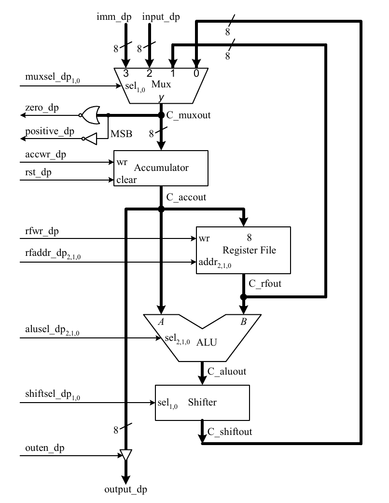
Glosario de Términos
- CPU
- Unidad Central de Procesamiento. Componente principal que ejecuta instrucciones; compuesta por la unidad de control y la ruta de datos.
- ALU
- Unidad Aritmético-Lógica. Circuito que realiza operaciones aritméticas (suma, resta) y lógicas (AND, OR) sobre los datos.
- ISA
- Arquitectura del Conjunto de Instrucciones. Define las instrucciones que un procesador puede ejecutar, sus formatos y codificaciones.
- FSM
- Máquina de Estados Finitos. Modelo de control con estados discretos y transiciones definidas por condiciones de entrada.
- PC (Program Counter)
- Contador de Programa. Registro que almacena la dirección de la siguiente instrucción a ejecutar en memoria.
- IR (Instruction Register)
- Registro de Instrucción. Almacena la instrucción actual leída de memoria durante la fase de Fetch.
- Opcode
- Código de operación. Bits de la instrucción que identifican qué operación se debe realizar (ej: 3 bits → 8 operaciones).
- Datapath
- Ruta de Datos. Conjunto de registros, multiplexores, ALU y buses que transportan y transforman los datos.
- VHDL
- Lenguaje de Descripción de Hardware de Circuitos Integrados de Muy Alta Velocidad. Lenguaje para describir y simular circuitos digitales.
- FPGA
- Arreglo de Compuertas Programable en Campo. Chip de hardware reconfigurable para implementar circuitos digitales personalizados.
- ROM / RAM
- ROM: memoria de solo lectura para programa. RAM: memoria de lectura/escritura para datos y programa (EC-2).
- MIF
- Memory Initialization File. Archivo de texto para inicializar el contenido de memorias ROM/RAM en herramientas de síntesis de Altera/Intel.
- Acumulador
- Registro especial (A) donde se almacenan los resultados de operaciones aritméticas y el dato principal de trabajo.
- FSM+D
- Modelo Estructural. Diseño que separa la máquina de estados (FSM) de la ruta de datos (D) como componentes independientes.
- FSMD
- Modelo Conductual. Diseño que combina la máquina de estados con las operaciones de la ruta de datos en un solo proceso VHDL.
- Palabra de Control
- Conjunto de bits generados por la unidad de control en cada estado que determinan las acciones de la ruta de datos.
- Flip-Flop D
- Elemento de memoria básico usado en la implementación de la FSM. Almacena un bit y su entrada D se carga en cada flanco de reloj.
- Ecuación de Excitación
- Expresión booleana que define la entrada D de cada flip-flop en función del estado actual y las entradas. Determina las transiciones de estado.
- One-Shot
- Circuito que genera un único pulso de un ciclo de reloj al detectar el flanco de una señal. Usado para leer el botón Enter en el EC-2.
- UP2 (University Program 2)
- Tarjeta de desarrollo de Altera con FPGA FLEX EPF10K70, DIP switches, LEDs de 7 segmentos y botones, usada para implementación en hardware.